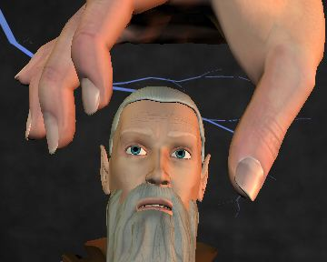

"We should take the upper route. It is shorter, and only leads through one tower, so there is less chance of running into more Undead," asserted Rosvenir.
"But the lower route leads through towers marked as #6 and #9 on the map," protested Mystical, "and so far all towers divisible by three have been completely hollow."
"You've got to be kidding. That's a stupid reason for choosing a route," stated Kurik.
"Fine. You take the high road, and we'll take the low road. And we'll get to Darkweaver before you!" proclaimed Mystical.
After wallowing in indecision a while longer, Zem, Endira, Rosvenir, and Kurik took the upper bridge while Haer, Mystical, and Kahlen took the lower.
The Upper Pathway
The four adventurers set out along the upper bridge. Said
causeway led to a depressing black edifice, made of the same metal and stone
mixture as all of the other towers in Toil. This tower held a pair of masks
carved above the lintel, one smiling and one frowning. The smiling mask
looked particularly sinister, as though it knew something terrible was going
to happen, and that furthermore it liked the idea that something terrible
was going to happen.
Rosvenir did not like the look of that mask one bit. Not one
little bit. Fortunately, he had a solution. Having recently paged through
the enormous list of spells available to him, he had stumbled across the
Horary IV spell which would predict the likely outcome of any
particular action. Being 25th level, the spell would reveal the events of
the next two years were he to step through the archway.
 The Mistress of Time, Space and Dimension was displeased. How on earth could she supply a prediction for the next two years? With the irrational and arbitrary actions this party took with distressing regularity, she could barely predict what was going to happen in the next two minutes. A way had to be found to keep Rosvenir from casting that spell.
Suddenly a large, disembodied hand appeared in the air above Rosvenir while he contemplated the exact wording of the spell he was to cast. Reaching downward, the hand placed thumb and forefinger on either side of his head, and began to lightly squeeze. "Umm, maybe I won't cast that spell, and we'll just go into the tower", he said. Apparently satisfied, the hand withdrew from whence it came.
The Lower Pathway
The second group of adventurers returned to the lower level of
the Tower of Chance and walked across the bridge. The next tower they came
to was completely empty.
"Yes! I knew I was right!" exclaimed Mystical.
The interior of the tower was completely dark, with shadows playing across the wall. The astute reader might be wondering how it is that there were shadows playing across the wall if the interior of the tower was completely dark with no sources of light. There are two reasons for this apparent discrepancy: 1) that is what the module says, and this Chronicler feels compelled to report it faithfully here without embellishment and 2) the shadows were actually Shadows, not shadows at all. The Shadows had been playing poker for the last 800 years, and had become quite good at it really. They had also become quite bored playing against each other for such a long time, and desired new participants for their game.
Mystical, Haer and Kahlen stood in the entryway, pondering their options. The path continued across the tower and out the other side, though it sloped upwards at a steep 20 degree angle. Seeing nothing untoward, the group of three stepped out onto the pathway, beginning the laborious climb. The stone of the path was sufficiently rough to get a good grip with the soles of their boots. Uneven shadows speckled the stone, making it difficult to see. One of the Shadows crouched at the top of the ramp, timing its opportunity to strike. When the group was roughly halfway across it launched itself into the air and tucked into a ball, rolling down the ramp. It all happened so quickly that the three adventurers didn't know what hit them, and were knocked from the bridge to fall toward the mists below.
Instinctively, Mystical unfurled her wings to slow her fall. Kahlen was able to cast a Fly spell in time to stop her own downward movement. As a Dabbler all of Haer's spells were geared towards landing safely after a long fall, which were of little use against the mists rushing up from below. Mystical dove toward the halfling but could not reach him in time, and Haer disappeared into shadow in the depths of the tower.
The Upper Pathway
Zem entered the Tower of Thespians first. Finding no danger, he
signalled the rest to join him. The entry chamber was very large, with faded
tapestries proclaiming long-dead actors and plays. Zem led the way deeper
into the tower, through empty hallways lined with dressing rooms and props.
Finally they came to a large central chamber, across which should lie the
hallway leading to the bridge on the opposite side of the tower. This was
the famed Theater of Toil, once renowned for its production of Pirates of
Penzance but now fallen into disrepair.
Looking up from the stage, Endira could see row after row of
seats in the huge theater. Many of the seats were occupied by a dead human,
apparently frozen in place where they had sat watching a performance some
800 years ago. Now, at the intrusion of life into their resting place, the
frozen audience began freeing themselves one by one. The room began to glow
with the dim light of Blackfire.
The Lower Pathway
Mystical and Kahlen, still saddened by the loss of their
companion Haer, approached the second tower along their route. It was
completely hollow.
"Small consolation, being right," observed Mystical.
The Upper Pathway
"This could be bad," said Kurik, in massive understatement. There
were over twenty of the Winter Wights here. "We probably shouldn't have used
the last charges of the Wand of Days."
"Maybe not, but I got a great suntan didn't I? Normally I just burn like a lobster," replied Rosvenir. "I still think it was a good idea," he added.
"The rest of you get Endira to safety. I will hold them at bay long enough to make good your escape," said Zem.
"No, Zem, I have a better idea," promised Endira. Casting Mass Enthrall, she began: "Welcome ladies and gentlemen to the first performance in this fair city of Toil of the mysterious, the Mighty, the INCOMPERABLE, KURIK the MAGNIFICENT!" Most of the Wights which had freed themselves from the ice returned to their seats. Only one remained in the aisle, unsure of what to do.
"Zem, set up that table over there," whispered Endira, and continued: "Now we must have your complete attention. Kurik the Magnificent has travelled the world far and wide, from the distant mysterious East to the deepest jungles of the Southern continent. After many years of searching, and facing dangers untold, he has recovered the Necronomicon, that most ancient Book of the Dead. Containing the secrets of life, death, and undeath, the Necronomicon was long thought destroyed. Tonight, he will reveal those secrets to you. Prepare to be amazed, to be astonished, and perhaps even to be unnerved!"
The light in the theater dimmed, and a spotlight shone down from the upper level to illuminate the center of the stage (more products of the bard's normally useless Entertaining Ways spell list). Endira whispered to Rosvenir, "See that Wight standing in the aisle? Make an illusion on Zem to look exactly like it."
"Now, ladies and gentlemen, Kurik the Magnificent will demonstrate the power contained within the Book of the Dead, which tells of the boundaries between Life, Death, and Undeath, and how those boundaries may be crossed by those with the skill and the power. We will require a volunteer from the audience." Casting Volunteer from the Audience, Endira chose the indecisive Wight standing in the aisle. "You sir, you look like a fine chap. Please, join us on stage." The Wight seemed surprised that its legs were carrying it forward and up the steps.
"Please lie down on the table," said Endira to the Winter Wight, which was compelled by the magic to comply. The spotlight shrunk until it encompassed only the table, with the Wight covered by a sheet atop it. Kurik strode from backstage into the circle. "Now, with the help of this fine fellow who volunteered, Kurik will show how to affect the transition from Undeath, to Death, and back to Undeath!" said Endira, her voice rising to a crescendo. Kurik placed his hand on the chest of the Wight, and made a few hand signs of no particular significance above its head (he was really getting into the act). Stepping back and raising his axe, he brought it down in an overhead arc, neatly chopping off its head. The spotlight winked out as he did.
Gasps from the audience revealed their shock. The spotlight turned on and off like a strobe light, showing scenes of the decapitated head falling to the stage, and Kurik kneeling down beside it to make more nonsensical hand motions above it. Lifting the head carefully (using a set of tongs found backstage to avoid the Blackfire), Kurik held it level with the Wight's body, and bowed his head in concentration. The spotlight winked out again for a few tension filled seconds. When it returned, Kurik was helping the now restored Wight climb down from the table. It raised its chin, showing no signs of damage from its recent decapitation. The Wight walked towards the steps to wild applause from the audience.
"Yes, ladies and gentlemen, Kurik can effect the transition from Undeath to Death and back again!" said Endira, somewhat out of breath. The body of the decapitated Wight had been quite heavy, and dragging it backstage in the few seconds of darkness had taxed her and Rosvenir. "I am told that the experience is quite exhilarating, and definitely breaks up the monotony of immortal Undeath. Would anyone else like to try it?" Hands shot up throughout the audience.
Haer, in the lair of Shadows
"Now, do you want to draw any cards?" asked the largest of the
Shadows. Haer sat across the table, his hands fastened securely in bronze
shackles. A chain wound about his chest, locking him to the chair in which
he sat. More shackles secured his feet to a heavy iron ring set in the stone
of the wall behind him. Finally, a chain ran from the collar around his neck
to a hook in the ceiling.
"Could you at least loosen the collar, its pulling my chin up and making it difficult to see the cards in my hand," pled the halfling.
"No," answered the leader. "I don't know how you got out of the shackles the first time, or the manacles the second time, or the straightjacket the third time, but now we've finally got you locked up and you are going to stay that way. Now do you want any cards or not?"
"No thanks," said Haer, "I think this royal flush is good enough as it is. See? Oops!" The diminutive thief had slipped slightly, his heavy bonds pulling him forward out of his seat. In desperation to keep from choking he grabbed the edge of the table, in the process tossing his hand of cards which fluttered about the room. The Shadows had never had a royal flush come up in the 800 years they had played the game, and dove to recover the cards in disbelief.
"Let me see those cards!" roared the leader, and the lesser Shadows rushed to comply. Presenting each card in turn, the Shadows could only stare in disbelief. Ace, King, Queen, Jack, and Ten. All Diamonds. "Where did you learn to play poker?" asked the leader as he turned to confront the halfling. Of course, the chair was empty, the discarded collar swaying gently back and forth. A small pile of locks and chains lay at the base of the chair in a heap, each carefully picked and unlocked.
"How does he do that?" asked the leader rhetorically.
The Aerie of the Darkweaver
"So, you're saying that Orcus actually liked the wide collars and
bell bottom pants?" asked Kahlen incredulously.
"Oh my yes," said the Darkweaver, "he thought he looked sexy in them. I admit that by making the bell bottoms very wide I could make his belly look smaller, but really a few situps every morning would have done wonders for him. Would you like some more tea, dear?"
Mystical and Kahlen had cautiously entered the tower of the Darkweaver, and had immediately engaged in combat with a group of skeletons in the first chamber. After killing several, the pair noticed that the Undead were not fighting back. Indeed, the skeletons seemed to be moving in a set pattern, which could only be described as "preening."
"I want to apologize again for damaging two of your mannequins, we really thought they were going to attack us," said Mystical.
"Oh, thats quite allright. They break bones all the time; I have some glue in the back room I use to put them back together. Really, I should put them away when I'm not using them," answered the Darkweaver sweetly.
Leaving the skeletons behind, Mystical and Kahlen had walked through several rooms packed floor to ceiling with skeins of cloth, spools of thread, and racks of completed clothing. All of it black, and made in various sizes and styles. Indeed, Kahlen had found a rather fetching outfit with fitted pant legs and a low neckline, which the Darkweaver was busily altering while they chatted.
"So business has been slow since Toil was removed from the Prime Material Plane?" queried Kahlen.
"Oh my yes. Every sorcerer, warlord, and vampire in the land used to come to my tower for a fitting. When Toil was moved I had centuries worth of back orders. I finished those several hundred years ago; they're out on the racks you passed on the way in. This one I'm altering for you, dearie, was for a priestess of Thazidun. She was human though, so I think she's probably long dead by now. I don't mind giving it to you instead, after all its already been paid for. She was a little shorter and smaller in the chest than you, so all I have to do is adjust a few seams to fit."
Continuing through the storerooms, the pair of adventurers had come to the aerie of the Darkweaver, which consisted of a drawing room sumptuously furnished in red and black draperies and pillows. A large loom and sewing table stood to one side, while a low table with tea service for four sat in the center. The Darkweaver herself was a little old lady with spectacles, a thimble gracing one finger. After a few tense moments, the two adventurers had settled into comfy chairs to chat. The Darkweaver was a fascinating conversationalist, and the room was cozy and warm compared to the rest of Toil.
"Oh, by the way," said the weaver, "your little friend the halfling has entered my tower. You might want to go get him."
"What? We thought he was dead!" exclaimed Mystical.
"Oh no, dearie, the Shadows caught him and took him back to their lair to play poker."
"How do you know that?" asked Mystical, rising to go and meet him.
"You see these little threads running from my chair across the floor? They lead from here to many different places in Toil, and I can sense what happens nearby. He is in the room with the mannequins right now, just watching them pose."
A short time later Kahlen was modelling her new outfit when Mystical returned with Haer.
"So you're saying the Darkweaver is a seamstress for the Undead?" asked the halfling of Mystical.
"Actually, dear, I make clothing for the living as well as the dead. I just specialize in a part of the market that doesn't wear pastel or earth tones," answered the Darkweaver, who had overheard the question. Haer, of course, heard none of this, as he was busy staring at Kahlen. Form fitting pants and a tight, cleavage flaunting bodice had completely changed her look.
"Wow, Kahlen, you're stacked!" observed the halfling.
The Upper Pathway
By the twelfth Wight the four adventurers had gotten the process
down to a steady routine. Wight volunteers, lies on table. Rosvenir alters
the illusion on Zem to resemble the new volunteer. Kurik chops off its head.
Rosvenir and Endira drag the body backstage, while Zem climbs onto the
table. Kurik bows to cheers, though Endira had to begin casting
Fanfare to cover the dwindling volume of applause.
Once the last Wight had been dispatched, the four adventurers
proceeded out of the tower and across the bridge to their destination, the
tower of the Darkweaver. They were met at the entrance by Mystical, who was
positively gloating over having been in the right about the best choice of
route to take.
Mystical led her comrades to meet the Darkweaver, who had sensed their approach. Several skeletal mannequins had just brought in fresh tea and four more teacups. After a short time the new arrivals had warmed up, relaxed, drank some tea, and gotten over the initial surprise of Kahlen's new look.
"I hope you'll forgive me for prying, but Acerak's poem said we had to retrieve something from you. Do you know what it refers to?" asked Mystical delicately.
"Oh my yes, its this saddle you'll need to ride the Phantom. I was supposed to make a big production out of your retrieving it, what with the fighting and the killing and all, but I was told it would only take a century or two before a party arrived to claim it. I expected to get caught up on my back orders, maybe get to kill a few groups of adventurers, and then Toil would be back on the Prime Material Plane and I'd be back in business. But now its been eight hundred years, and I'm just glad to have company for a change. Do you think you could stay a tad longer before you go off to the Fortress of Conclusion?"
[Editor's note: If you haven't figured it out yet, the gaming session was cancelled. This Chronicler felt it imperative to produce an account of how the session might have gone, had it been played.]